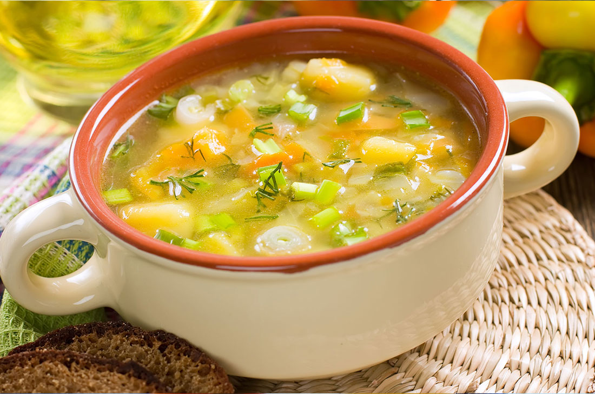
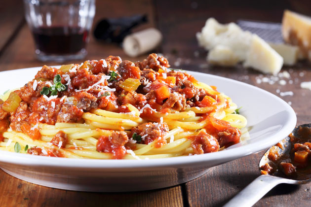

Historial
Recetas de sopa rápidas y fáciles
28 de febrero por Jose Villabona
La sopa puede servir como un delicioso aperitivo para cualquier tipo de comida. Dependiendo de los ingredientes utilizados, también puede ser una comida rápida por sí sola. Si bien hay muchas sopas instantáneas que puede preparar en unos pocos minutos, nada mejor que la variedad casera, especialmente cuando se cocina con un crockpot. Así que si te gusta la sopa ligera o espesa y cremosa, aquí hay recetas fáciles de sopa que puedes preparar para tu olla de cocción rápida: Article Source: http://EzineArticles.com/9768645
En una sartén a fuego medio, derrita el aceite de coco, luego cocine los pimientos y la cebolla durante 5 a 7 minutos o hasta que estén tiernos. Agregue la carne molida a la sartén y revuelva hasta que esté cocida. Escurrir y transferir la mezcla a una olla de cocción lenta. Sazone con chile en polvo, comino, sal marina, pimienta, canela, paprika, pimienta de cayena, ajo en polvo y cebolla en polvo y revuelva para combinar bien los ingredientes. Agregue los tomates en cubitos, el caldo de huesos, los chiles verdes y la leche de coco. Cubra y cocine por 8 horas a temperatura baja. Agregue los ingredientes deseados antes de servir. Article Source: http://EzineArticles.com/9768645
La receta es simple y queda muy rica la sopa, quiero mas! seguire mirando mas recetas que sigan asi.
Mejor aun con mas ajo y la modificare para poder sacar mi propia receta de cosina pora compartir con mis amistades.
Recetas de pasta saludable que son simplemente increíbles
21 de febrero por Jose Villabona
Al igual que con cualquier otro plato, puede convertir la pasta en una opción de comida más nutritiva y deliciosa si está tratando de perder peso o simplemente comenzar un estilo de vida más saludable. Son los ingredientes que usas lo que importa. ¡Asegúrate de usar verduras frescas y condimentos que sean libres de culpa! Article Source: http://EzineArticles.com/9971659
Mezcle la berenjena, las zanahorias, el calabacín, la cebolla, los tomates y la sal en un bol. Coloque en una bandeja para hornear y hornee en un horno precalentado (425F) durante 20 minutos. Cuando esté listo, agregue el ajo, tomillo y jugo de limón. Revuelva y hornee por 15 minutos más. Coloque las pastas cocidas y las verduras asadas en una olla y agregue el vinagre balsámico y las hojuelas de pimiento rojo. Condimentar con sal y pimienta. Mezclar bien antes de servir. Article Source: http://EzineArticles.com/9971659
La receta es simple y queda muy rica la sopa, quiero mas! seguire mirando mas recetas que sigan asi.